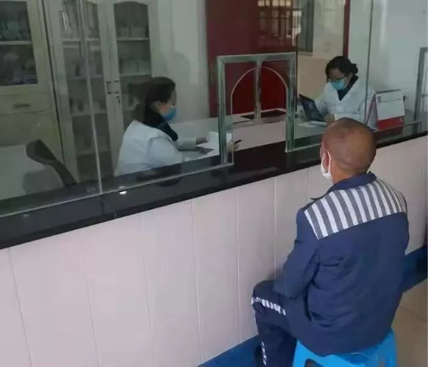

“我想保护好我的村”
原文链接 备份链接 *************▲*************玉龙雪山脚下的玉湖村。 （受访者供图/图） 全文共*4244*字，阅读大约需要10分钟。 在求助信里，我写了四样求支援的物品，是因为我只知道这四样。而实际情况 …
大家好，我是田静。
按照规定，今天已经是春节后第三个工作日了，我依旧待在家里处理工作。我以为很多人会和我一样，但事实却是：很多人冒着风险走出家门，回到自己的工作岗位。
离疫情中心千里远中越边境，张扬过了四个关卡才回到单位。
这里不像大家想象的国界，铁丝网密布，边防军人把守。而是中越两国热闹的边贸互市。
要是往年，张阳此时可能正在水泄不通的市场里，听越南小贩柔软的吆喝，品尝美味的越南小吃，尽情选购物美价廉的异国特产。
今年疫情一来，如临大敌，互市关停里，基层工作人员和边防警察都派驻到公路上，设点堵卡。
还有一位主动申请返回岗位的医生，她的病人是监狱的罪犯。
大家都说目前监狱才是最安全的地方。但因为疫情，她现在一天要给40多个犯人看诊，每一个犯人体温上升，都会比平时紧张。
她说：“要在战略上藐视敌人，战术上重视敌人。”
疫情影响到各行各业，金融行业耶不能幸免，证券公司的袁莉，看着新年开市的电子屏幕：都是一片绿，啥时候可以一片红？
隔着屏幕，我似乎在这句话里，看到了她水灵灵的眼睛，古灵精怪而又充满哀伤。
遇到灾难时，这些坚守在自己的岗位上的平凡个体，才是我们的希望。
正如张阳说：“立春了，会好的！”

中越边境
▌卡点重重，钓鱼村民被困野外三天
全球化时代，人口流动的速度和强度前所未有，中越边境的偏远小镇也不会坐以待毙。
上班前一天，张阳开着自己的红色小轿车，从云南省文山壮族自治州的州府往南走，经过四个关卡，终于到达中越边境。
“往小路走了十多公里被拦住了，又折回去走大路，每个关卡都要测量体温、登记车辆和个人信息，包括住所和工作地。”
几年前通过事业单位考试，张阳进入了文山州某镇的农业综合服务中心。去年底在州府买了房、结了婚，“算是一辈子留在这里了。”
在疫情防控的基层一线，没有延迟上班的说法。

张阳的单位所在地虽然是一个镇，但辖区面积却并不小。镇辖区的中越边境线有108公里长，共有18个村委会（社区），其中6个村委会与越南接壤。
为了促进两国交流，政府在这里设置了5个边民互市点。赶集日，边民互市点就成了当地人与越南人商贸往来的绝佳之地，热闹非凡。
如今受疫情影响，边民互市点全部关闭，两国人民都被挡在了各自的国境线内。镇上的集市也关闭了，只留下一个菜市场、一家宾馆和两家超市。
“菜市场每天都要消毒，宾馆给发热的人隔离用，进超市必须戴口罩、量体温，尽量线上支付。”
疫情打乱了平日的工作状态，基层工作者全部归队，投入到抗击疫情的工作中。张阳同事们都在镇与镇、村与村之间设卡，防止人员流动，影响疫情防控。
“一些卡点24小时四班倒，有的24小时三班倒。”卡点工作人员包括政府职工、医生护士和派出所民警，在国境线上，还有边防警察。
“政府、医院和派出所的人集中在一起，组成了4个小分队，各村组织了18个小分队轮流值班。”
每个工作人员每天上午和下午都要测量体温。

设卡点带来许多无奈，但这是当前疫情防控最有效的方式之一。
刚开始堵卡那天，另外一个县的村民到河边钓鱼，结果被拦在了两个卡点中间，在野外待了三天时间。
好在卡点工作人员换班时发现了他们，顺道用车护送他们离开辖区。还有的连同房车，一起滞留在山上。
铁栏杆横亘在道路上，除了急救车辆、应急车辆和运送物资的车辆无人可以逾越。
对于堵卡，每个人都有自己的立场，从国家层面来讲这是当前疫情防控最有效的方式，从村民角度来看这给生活带来极大不便。
边疆少数民族地区的疫情防控与内地不一样，语言不通、文凭不高、安全意识差——这似乎是中国所有偏远农村的现状——随之而来的是争吵和无奈。

村民没有条件，防疫小分队要派人到村里挨家挨户测量体温，每天2—3次，如果体温超过37.3度，医生便到家检测是否感染。
2月2日到了单位，张阳领到了防护口罩，但并没有被安排参加堵卡——他有感冒症状，因此在办公室处理日常工作。
2月3日，文山州首例确诊，这位患者曾到过张阳常去的菜市场。张阳不得不把自己的情况“及时上报”。
单位要求全部工作人员戴口罩，但现在防护物资依旧紧张。“物资会解决的。“
”立春了，会好的！”张阳说。

文艺工作者
▌两次改签机票 有人咳嗽都会心慌
2月3日，海天起得很早，收拾打扮后，骑上电动车去了单位——因为地铁公交已经停运——她是匆匆改签机票赶回来上班的。
自春节放假，海天一直在纠结要不要回家看望父母。一年不回家，心里总是挂念着远隔千里的父母，但每天增长疫情数据令海天唏嘘。
思前想后，最终海天还是选择回家。丈夫把她送到了城郊的高铁站，没有与之同去。此时已是1月26日，正月初二，全国多地早已启动了一级响应。
好在除了湖北以外，还没有多少省份封路，列车也正常运行。“动车上的乘客基本都带了口罩，火车站的人也比平时少了许多，还有工作人员测量体温。”
父母开车到火车站，用酒精喷雾喷了个遍，才让海天上车。
海天是一名文艺工作者，平时演出任务重，基本没有节假日。当大部分人“五一”和“十一”出去旅游、逛街的时候，他们依旧需要参加各种演出。
综合考虑之下，单位1月中旬获批后下发通知：春节假期从1月23日到2月10日。
世间诸多事情似乎都是巧合。1月29日，海天单位所在地的省委省政府下发通告，除特殊行业，其他企事业不早于2月9日24时前复工。
后来，有人拿海天打趣：“你们单位是不是提前知道疫情信息？”
海天买好了2月9日的回程机票，计划10日上班。
不过，生活似乎经不起规划，尤其在这样的特殊时期，人不得不被疫情牵着鼻子走。
两天后，单位给海天打来的电话：2月3日提前上班，要她改签机票按时到单位。
作为文艺工作者，提前上班似乎没有太大必要。但作为省厅的下属机关，与海天单位同级的其他单位2月3日正常上班。
很多时候，人们看得见别人清闲，却看不见别人付出，两相比较后总会觉得不公。但很少有人明白，公平并不意味着把所有人当作同样的人来对待，而是不偏不倚地处理每一个人的独特处境。
总之，因为一些人的不满，海天单位不得不提前上班。

“那么多人都在上班，提前去也没有怨言，但是有些难受。”海天自费改签了机票，并且托朋友买了口罩。
但疫情越来越严重，全国各地陆续开始封路，海天老家也没有幸免。万般无奈，她又重新把机票改签到道路通畅的机场。
2月2日出发那天，依旧是父母开车送她去机场，不同的是一路上被防疫工作人员两次拦下测量体温。
“飞机上所有人都是戴了口罩的，但是旁边一直有人咳嗽，心里还是很慌。”
2月3日早晨，新闻按时推送了疫情通报数据——全国新增确诊2829例，累计确诊17205例，疑似21558例。
今年春节后的第一个工作日，阳光正好，但大街上空空荡荡，商铺紧闭，不见人的踪影。
八点半，全体行政办公室的人都到单位了。与以往不同的是，今年开工没有那么热闹。
“单位采用了轮班的方式，一人去一天。”开完会，大部分人又回到了家里，只留下在办公室处理日常工作的值班人员。
海天和同事们每人领到3个防护口罩。“要求进单位就要戴口罩。”
其实在这样的时日里，单位并没有多少工作需要处理，原本十几个人的办公室里，只剩下四个人。
对海天来说，在办公室和在家里没有区别，只不过是换了一个地方隔离——依旧无聊。
干完第一天，她又将休息一天，然后再去值班。

证券工作者
▌对我最大的影响不是出门，而是股票大跌
与海天不同，袁莉是主动回来上班的。
作为一名证券行业的从业者，每年春节后的第一个交易日意义特殊——股民都想图个开门红，一般情况下也都会如此。
但受疫情影响，今年的情况刚好相反——“千股跌停”。2月3日，A股开盘，上证大幅低开8.42%，超3000家个股跌停，创近23年记录……
不过，这些都在意料之中。不仅对袁莉这样的金融从业者来说如此，对每一个股民来说也毫不意外。
袁莉是公司的业务员，主要工作是给客户推荐理财产品、做些理财配置。
从四川老家来到云南工作已经七八年了，袁莉在昆明买了房、成了家，似乎成了一个云南人。
1月22日，新型冠状病毒肺炎已经成为媒体头条，放假后的袁莉从昆明飞到四川老家。
“那时候昆明一个疑似病例，老家还一个都没有，路上也没人戴口罩。”
疫情之下，对病毒的恐惧慢慢变成了对未知的恐慌，身体出现的一切变化都会令人心惊胆战。“回去就感冒，立马去医院，医生说没啥就让回来吃药。”
大年三十过后，当地就发公告不让出门，袁莉老家通往成都双流国际机场的高速公路全部封闭。
不过，袁莉依旧想要回到工作岗位上，绕了很多路终于到了机场。“很多航班都因为疫情取消了，不过我的没有受到影响。”

2月2日，她回到了昆明。
和全国许多省份一样，云南省也为防控疫情发布了多条通告，其中一条专门针对企业复工和学校开学，要求企业不得早于2月9日上班。
在互联网时代，地理空间对工作的影响正变得越来越小。袁莉的公司要求部门主管尽量到岗，其他工作人员可以采取了线上办公的方式。
公司在昆明市最繁华地段——南屏街，“停车费太贵”。
公交系统停运之前，袁莉都是坐公共交通出行，但是现在，整座城市似乎都停了下来，她不得不开车上班。
昆明的冬天还是一样的阳光明媚，气温保持在十多度。但马路却没有拥堵，也没有焦躁的情绪，街灯依旧亮着，却不见昔日车水马龙。袁莉感觉到了几分寒意。
这段时间，公司统一解决午餐。到岗的人员进门时都要挨个消毒、量体温。
袁莉并非主管，按照公司的规定，不需要这么早到岗。
“主要我懒，太多工作相关的东西都放在办公室了。还有是因为客户较多，有很多持仓。”
这几天，她最紧要的是调止损，能降低损失的，就要降低。“能卖的股票要卖了，不能卖的要做预判，降低损失。”
“对我最大的影响不是出门，而是股票大跌。”过去的2019年，“寒冬”成为了高频词汇——“影视寒冬”、“互联网寒冬”、“资本寒冬”……
疫情爆发，股票大跌虽然在意料之中，但也免不了心生惆怅。“千股跌停”意味着客户的资金蒸发，或许藏在了股票里，但怎么也找不到了。
做金融的人都相信钱怎么走事件就怎么走，虽然有些片面，但也缓解了袁莉的恐慌。“经济数据都在转告长线是看好的，不过最近一月估计都会比较难，行情也一天一个样。”
“看到了一片绿，啥时候可以一片红？”袁莉说，这是她今年第一个工作日唯一的想法。
“生活还是要继续，看天了。”

监狱医生
▌提前返岗封闭值班 每天接诊40余罪犯
众所周知，监狱是一个人口密集度很高的地点，一旦有疫情传入，后果不堪设想。
因为疫情，云南昆明监狱要求部分人员提前返岗，作为监狱医院的一名医生，柳婷接到命令后，主动请缨要求值守，想让年长的同事多休息几日。
明星们从热搜消失的日子里，医生成了主角。在这场和时间赛跑的疫情里，唯一能让大家安心的，可能只有“医生”二字。
疫情开始时，监狱就停止了罪犯和亲友间的会见。监管区门口设立了体温监测点，每一个进入监管区的人员，都要进行体温监测。
柳婷按照要求检测完，就转身投入到工作中去了。
作为双警家庭，柳婷丈夫也在单位值守，原本热热闹闹的家一下只剩父母。大过年的，不能陪伴在父母身边，做女儿的心里当然很愧疚。
好在父亲很支持她的决定，值守期间，还特别给她捎来一张纸条，上面写着：
“柳婷吾儿：见字如面，你能在困难面前挺身而出，足以证明你没有辜负爸爸对你的教诲，你要时刻以一名合格的党员要求，不负监狱重托。”
舆论喜欢造神，尤其在迷茫和慌乱当下。其实，世上哪有什么白衣天使，不过都是父母眼里的孩子，子女眼里的父母。
虽然父母都理解，也支持，但是自己心里总是觉得亏欠他们，等打赢这场疫情防控阻击战，柳婷准备一家再吃顿热闹的团圆饭。

由于天气变化，感冒病犯剧增，自封闭值班以来，柳婷每天平均接诊病犯40余名。
尽管病犯和外界一直是严密隔离，也没有武汉相关接触史，但柳婷还是要一一仔细询问发热病犯的身体情况。
“哪里不舒服？”、 “有什么症状？有没有出现四肢酸痛乏力？”、“先量下体温……”这些话，每天要说上几十次。
问她每天接待这么多发热病人怕不怕？她笑着回答：战略上藐视敌人，战术上重视敌人。
虽然疫情被严防死守在监狱高墙之外，但值守期间，也遇到一些比较紧急的情况，比如一个罪犯突然腹部剧烈疼痛，需要进行急诊。
医院全体迅速做好接诊准备，病犯送到后，通过B超、X光检查，医生进行了会诊，初诊为疑似空腔脏器穿孔或肠套叠可能，有生命危险！
在中心医院的指导下，大家齐心协力完成应急处置，凌晨3点罪犯情况才稍有好转，而院长守了整整一夜。
还有一名罪犯高血压突发疾病，送至医院时已意识混乱，因血压过高，有脑出血或脑梗可能，医院抢救后也不具备救治条件，同事们只能连夜送至中心医院住院。
这些都是监狱医院里，医务人员的日常工作。也许有人会问，为什么要待在这种医院，没有钱，也很难拥有名誉。
纪录片《手术两百年》里就说：医学是人类善良情感的一种表达，它起源于人类最朴素的救助愿望。
医生的眼里只有病患，没有职业身份，高低贵贱。
因为监狱都是封闭管理，相对来说应对要更为自如一些，各类物资供应都正常。
但疫情还是给大家都绷紧了弦，体弱的罪犯，特别配发了棉衣棉被，做好防寒保暖防止感冒，也加强对重点区域的消毒清洁工作。
网上有人开玩笑说，现在监狱才是最安全的。对于柳婷们来说，这可不是一句笑话。
不止是柳婷，疫情过后，大家也许会再次遗忘这些医务人员的付出和牺牲。但是，疾病不会遗忘人类，它随时可能出现。
我想，关于医疗，我们总需要记得点什么，而不是一味的遗忘。
（注：文中部分人物为化名）
为中国女性安全 提供专业解决方案
▬ ▬ ▬ ▬ ▬ ▬ ● ▬ ▬ ▬ ▬ ▬ ▬
女 孩 别 怕
未经授权 禁止转载
欢迎分享到朋友圈
原文链接 备份链接 *************▲*************玉龙雪山脚下的玉湖村。 （受访者供图/图） 全文共*4244*字，阅读大约需要10分钟。 在求助信里，我写了四样求支援的物品，是因为我只知道这四样。而实际情况 …
原文链接 备份链接 作者 | 李伟 江晓川 许文苗 编辑 | 杨颢 出品 | 棱镜·腾讯小满工作室 欢迎下载腾讯新闻APP，阅读更多优质资讯 从私人关系到平日工作，这些人多和武汉没太多直接关系。和你我一样，他们是通过手机、电视关注着这个叫 …
原文链接 备份链接 文 | 万千 村口终于开始拦阻到访者了。 2月1日，在钟南山院士表示，新型冠状病毒出现“人传人”的情况的十二天之后，及在武汉这座千万级人口的城市宣布封城的九天之后，我的家乡所在的江西省十八线县城终于进入了最严重的警备状 …
原文链接 备份链接 编者荐语： 马子本来计划春节出游，结果回来过个年，就因疫情封城动弹不得了。我俩见个面都难。天门疫情确实严峻，希望大家能多给予关注。瘟疫面前，命无贵贱，人人平等。 © 图文 阅路山 2020年2月4日 立春 武汉封城的 …
原文链接 备份链接 这样的经历让我们这次“两人世界”变得很值得、很难忘，也很有意义。当我们跟家里老人说，将帮助海外华人实现爱心心愿、把援助物资运回国时，他们也都非常支持。老人还让我们放心，说家里孩子都没事。 口述 | 王珠凤 整理 | …